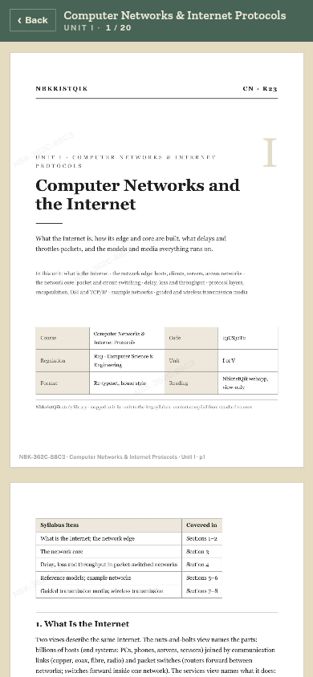

The shelf is loaded. Eleven CSE subjects, 51 documents, 1,248 pages, all set from the R23 syllabus. The reader is inside the bot. There is no PDF.
I have been building NbkristQik for a while. It started with attendance and mid marks, the two questions that decide a morning. The library is the third question: what am I supposed to read?
The answer is not a file in a WhatsApp group. It is a shelf that knows your semester and a reader that gives you one page at a time.

What is open
The first shelf covers four semesters of CSE: 2-1, 2-2, 3-1, and 3-2. The subjects are the ones in the R23 scheme, from Advanced Data Structures to Cryptography and Network Security. Software Engineering is Unit I only; the rest is still being cut.
Each subject opens into its units. Each unit is a stack of pages. The reader shows one page at a time and drops pages you have scrolled past.
- Registered students only. The shelf follows the roll number on your registration.
- Telegram only. The reader checks the signed Telegram session. The content does not open outside Telegram.
- No file. Pages arrive as images with a per-reader mark. There is no PDF, no download, and no text to copy.
How the doors open
The shelf is filled ahead of the doors. I am opening it semester by semester, after the pages for that semester have been checked end to end.
If your semester is open, the Library button is in your chat and /library works. If it is not, the command is hidden. Nothing is broken; the door is not open yet.
The shelf
| Semester | Subjects | Documents | Pages |
|---|---|---|---|
| 2-1 | ADSAA, OOPJ, DLCO | 15 | 363 |
| 2-2 | DBMS, OS, SE | 11 | 274 |
| 3-1 | AI, CN, ATCD | 15 | 387 |
| 3-2 | ML, CNS | 10 | 224 |
| Total | 11 subjects | 51 | 1,248 |
Counts from the pages on the server. Software Engineering contributes 1 document and 27 pages.
What it is not
It is not a PDF library. It is not a folder of scans. It does not open outside Telegram, and it does not give you a file you can forward.
That is on purpose. A file can be copied, renamed, and uploaded anywhere. A page that arrives with your reader’s mark is traceable. The mark is faint at reading size and survives a screenshot. It will not stop someone who photographs the screen with another phone; nothing stops that. It makes the ordinary leak, the screenshot and the forward, point back to one reader.
A scan is a picture of a page designed for print. This is a page designed for the phone.
Why a page
The short version: a PDF is a file you manage. This is a page you read. The difference is the unit.
I wrote a longer note about the making of the documents: the syllabus, the typesetting, the 362 diagrams, and why the file was the wrong unit. It is the other half of this launch.
What’s next
The rest of Software Engineering. Assignments, so the shelf can hold the work as well as the notes. More departments when the college’s catalogue can support them. The library will stay small until the pages are good.
If you are a NBKRIST student, open the bot and register. When your semester opens, the Library button will be there.